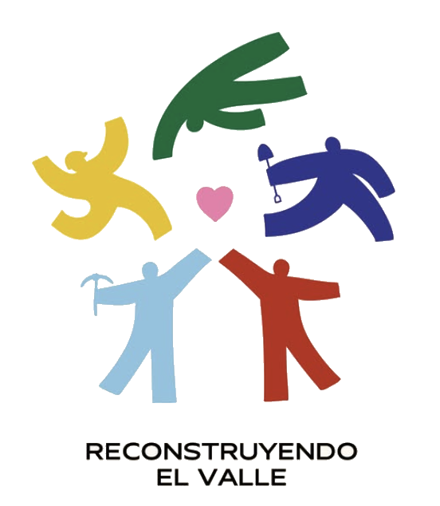

TERS por la Reconstrucción de un nuevo Cali 🇨🇴
Cada aporte llega de manera directa y transparente a quienes más lo necesitan.
Desde TERS nos sumamos a un grupo de marcas, creadores y empresarios que ponemos nuestro tiempo, recursos y redes al servicio del Valle y de las personas afectadas por la emergencia. Los fondos se destinan a ayudas y elementos de primera necesidad.
El 100% va a la causa: tu aporte llega directo a la VAKI.
Donar en VAKI →Te lleva a la campaña oficial en VAKI. Tu donación se procesa allá, en sus canales seguros; TERS no recauda ni administra el dinero.
Reservado para colocar la mecánica de la promoción (por ejemplo la de "20 x 20") cuando se defina. Por ahora es solo un espacio marcado en la maqueta.
La promoción
Espacio reservado para explicar qué aporta TERS y qué gana quien participa. Se definirá y activará más adelante; por ahora queda marcado como pendiente en la maqueta.
Paso a paso
El botón te lleva directo a la campaña oficial en VAKI. Donas allá, con tus datos. El dinero nunca pasa por TERS.
Los fondos se destinan a ayudas y elementos de primera necesidad para las comunidades afectadas del Valle.
Aquí solo te mostramos cuánto vamos reuniendo entre toda la comunidad que se une a la causa.
Paso reservado a la mecánica de la promoción — pendiente de definir.
Transparencia total
Lo hacemos de la mano de Reconstruyendo el Valle y su campaña en VAKI. Tu aporte entra directo a la campaña, nunca pasa por TERS, y se convierte en ayuda para el Valle: elementos de primera necesidad, apoyo a las familias afectadas y a las comunidades más golpeadas por la emergencia. Estos son los frentes:
Kits de ayuda, alimentos y elementos esenciales para las familias afectadas.
Ayuda directa a las comunidades del Valle más golpeadas por la emergencia.
Recepción de donaciones en el centro de acopio: Avenida 9 Norte # 17N-41, Floret (Cali, Valle del Cauca).
Cada aporte busca llegar de manera directa y transparente a quienes más lo necesitan.
Lo usamos para multiplicar la ayuda. La donación se hace en los canales oficiales y seguros de la VAKI; aquí solo te mostramos cuánto vamos sumando entre todos.
Información con base en la campaña oficial de VAKI; las cifras pueden cambiar a medida que avanza la emergencia.
La promoción
Bloque de diseño reservado para el detalle de la promoción. La calculadora de abajo es solo una vista previa; su lógica se activará cuando se defina la mecánica.
¿Ya donaste?
Ya donaste en la VAKI: ¡gracias! Ayúdanos a que más personas se sumen compartiendo la campaña en tus redes.
Espacio reservado para el generador de wallpaper o la pieza descargable de la campaña. Se activará más adelante.
Lo legal
Términos y condiciones — pendientes de definir.
Este es un espacio reservado. Aquí irán los términos y condiciones de la campaña y de la promoción una vez se definan y cuenten con validación jurídica. Las donaciones se realizan directamente en los canales oficiales de la VAKI; TERS no recauda ni administra dineros.